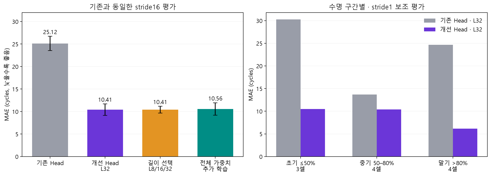
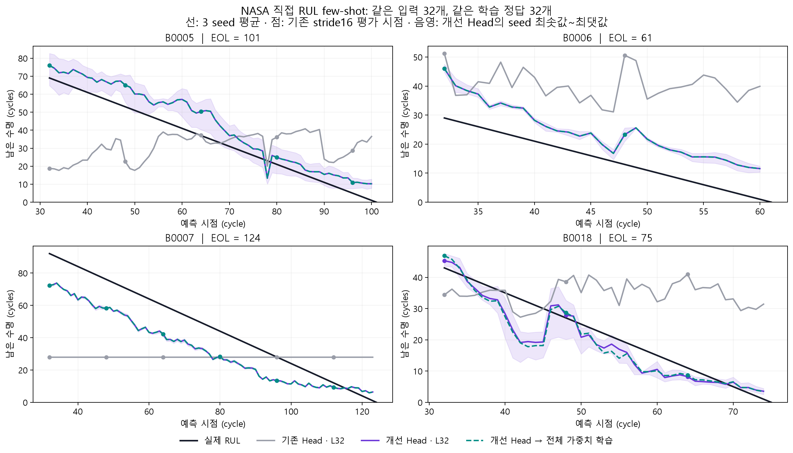
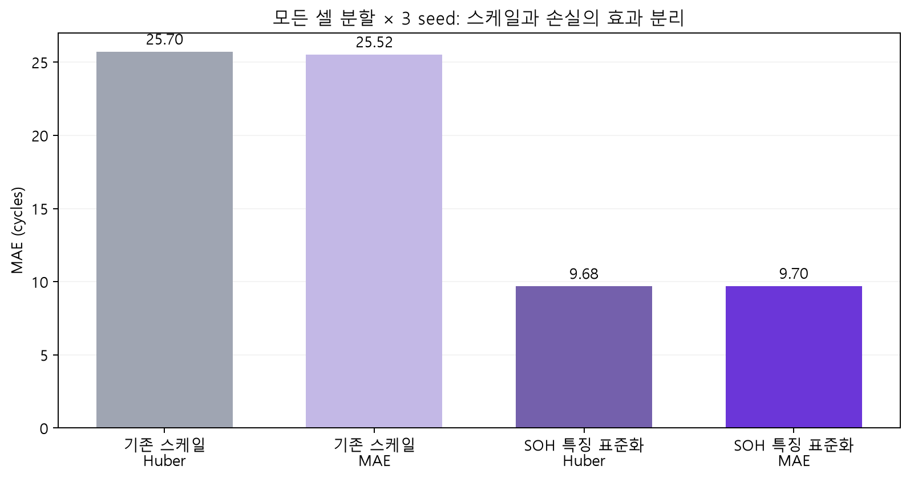
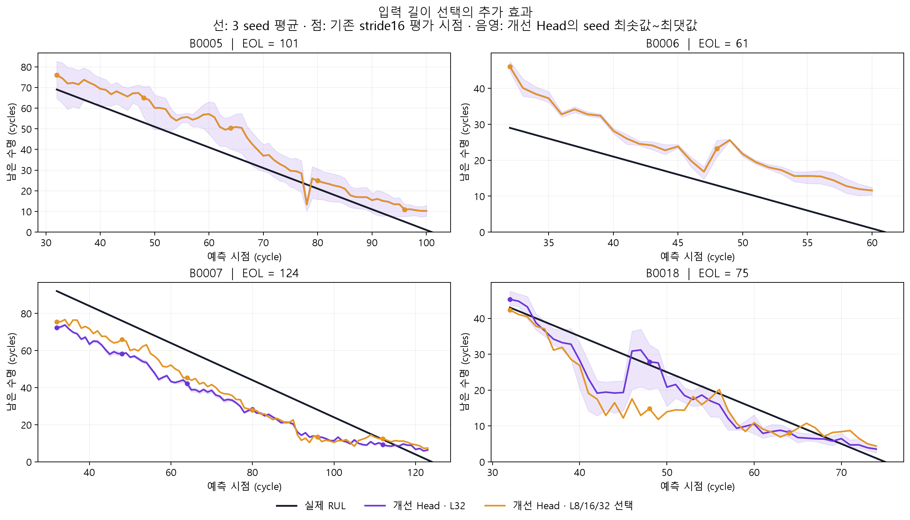

Chronos-2 · NASA · 직접 RUL · Few-shot
NASA 직접 RUL few-shot 개선
기존과 같은 셀 분할·입력·정답 수·평가 시점
MAE 25.12 → 10.41 cycles · 58.6% 감소Head 입력의 기존 SOH 특징 스케일과 학습 설정을 조정했다. 모델 층·차원·입력 변수는 그대로 유지했다.
무엇을 비교했나
- 입력: 최근 SOH 32개 → 해당 시점의 남은 수명 1개. 정답은 EOL − 현재 cycle.
- 학습: 별도 셀 2개 × RUL 정답 16개 = 32개. 검증 셀 1개의 전체 유효 정답으로 설정·체크포인트 선택, 시험 셀 1개는 가중치 학습에 사용하지 않았다.
- NASA EOL: 기존과 동일한 초기 기준 SOH 80% 첫 도달. B0005=101, B0006=61, B0007=124, B0018=75. 정격 용량 80%로 바꾼 실험은 아니다.
- 평가: seed 42·43·44 각각 셀별 지표를 구하고, 4셀을 동일 가중 평균한 뒤 seed 평균을 계산했다. ±는 seed 간 표준편차다.
32개는 학습 정답 수다. 별도 검증 셀의 정답은 추가로 사용한다. 과거 셀의 수명 전반에서 학습 예시를 고른 방식이며, 새 시험 셀의 미래 EOL을 학습에 넣지 않는다.
기존 평가 시점에서의 결과
| 방법 | MAE (cycle) | RMSE | 셀별 R² 평균 |
|---|---|---|---|
| 기존 Head · L32 | 25.12 ± 1.60 | 28.95 | -4.20 |
| 개선 Head · L32 | 10.41 ± 1.29 | 11.04 | 0.05 |
| 개선 Head · L8/16/32 선택 | 10.41 ± 0.75 | 11.34 | -0.00 |
| 개선 Head → 전체 가중치 학습 | 10.56 ± 1.40 | 11.26 | 0.04 |

주 비교는 기존과 같은 stride16이다. 4셀의 서로 다른 시점 총 16개를 seed별로 평가한다. 입력 길이까지 선택한 결과는 고정 L32보다 추가 이득이 없었다. 전체 가중치 학습은 검증에서 12개 중 10개가 학습 전 Head로 되돌아갔다.
R²는 한 셀의 여러 시점 예측을 모아 계산한 뒤 셀별 동일 가중 평균이다. B0006은 기존 평가 시점이 2개뿐이고 R²가 음수여서 전체 평균을 크게 낮춘다. 점을 전부 합쳐 계산한 pooled R²가 아니다.
셀별로 얼마나 달라졌나
| method | 셀 | 기존 Head · L32 | 개선 Head · L32 | 개선 Head · L8/16/32 선택 | 개선 Head → 전체 가중치 학습 | 감소율 (%) |
|---|---|---|---|---|---|---|
| B0005 | 24.46 | 9.70 | 9.70 | 9.70 | 60.36 | |
| B0006 | 29.92 | 13.64 | 13.64 | 13.64 | 54.39 | |
| B0007 | 29.38 | 14.76 | 12.27 | 14.76 | 49.76 | |
| B0018 | 16.73 | 3.52 | 6.04 | 4.14 | 78.94 |

4셀 모두 기존 Head보다 MAE가 낮아졌다. 다만 B0006은 여전히 과대 추정이 남아 있다. 선은 더 촘촘한 stride1 저장 예측을 보여 주며, 점이 주 비교에 쓰인 기존 시점이다. 음영은 3 seed 범위이며 신뢰구간이 아니다.
분할을 바꿔도 개선되는가?
시험 셀마다 나머지 3셀을 모두 한 번씩 검증 셀로 사용했다. 각 경우 나머지 2셀에서 16개씩만 학습했다. 입력은 L32로 고정하고, 스케일 2종 × 손실 2종을 각각 보고했다. 학습률과 체크포인트는 각 방법·seed에서 검증 MAE로 선택했다.

| 방법 | MAE | RMSE | 셀별 R² 평균 |
|---|---|---|---|
| SOH 특징 표준화 + Huber | 9.68 | 10.66 | 0.48 |
| SOH 특징 표준화 + MAE | 9.70 | 10.87 | 0.39 |
| 기존 스케일 + Huber | 25.70 | 29.22 | -3.42 |
| 기존 스케일 + MAE | 25.52 | 29.51 | -3.13 |
| method | 시험 셀 | SOH 특징 표준화 + Huber | SOH 특징 표준화 + MAE | 기존 스케일 + Huber | 기존 스케일 + MAE |
|---|---|---|---|---|---|
| B0005 | 11.65 | 10.78 | 27.15 | 27.10 | |
| B0006 | 7.22 | 8.04 | 23.77 | 20.07 | |
| B0007 | 16.23 | 15.87 | 30.38 | 30.90 | |
| B0018 | 3.62 | 4.11 | 21.52 | 23.99 |
손실만 바꾸는 효과는 작고, 기존 SOH 특징의 표준화 효과가 컸다. 표준화 후에는 Huber와 MAE의 전체 평균이 비슷하다. 따라서 앞의 검증에서 MAE가 선택됐다는 사실을 “MAE 손실 자체가 핵심”으로 해석하면 안 된다.
4개의 실제 시험 셀에 대한 반복 분할이다. 12개의 독립 시험 셀이 생긴 것은 아니다. 앞의 결과에서 출발한 후속 진단이므로 독립 외부 검증으로 해석하지 않는다.
입력 길이를 바꾸는 효과

검증으로 선택된 입력 길이는 B0005·B0006은 32, B0007은 16, B0018은 8이었다. B0007에서는 좋아졌지만 B0018에서는 오히려 나빠져, 고정 L32의 전체 성능을 넘지 못했다.
해석과 남은 한계
이번 결과는 내부 구조 변경 없이도 Head 학습 설정에서 상당한 개선 여지가 있었다는 증거다. 기존 768개 모델 특징은 그대로 두고, 이미 사용하던 평균 SOH·SOH 변동폭·마지막 SOH의 3개 특징만 학습 셀 기준으로 표준화했다. 기존 분할의 탐색에서는 이 표준화와 MAE 손실이 함께 선택됐다. 원인을 분리한 반복 분할 비교에서는 표준화의 효과가 크고, 표준화 후 Huber와 MAE의 성능은 비슷했다. 전체 가중치를 학습하면 더 좋아진다는 증거는 이번 비교에서 얻지 못했다.
NASA 4셀은 수명이 서로 다르고, 특정 셀 하나를 검증에 쓰는 선택도 불안정할 수 있다. 기존 시험 결과를 이미 본 뒤 진행한 탐색 실험이므로 미사용 외부 데이터에서의 성능 보장으로 해석하면 안 된다. 특히 B0006의 성능은 아직 충분하지 않다.
수명 초기·중기·말기 분석은 t/EOL 기준의 사후 평가다. 실제 예측 입력에는 EOL과 수명 비율을 넣지 않는다. 시작 시점이 t=32이므로 EOL=61인 B0006은 초기 ≤50% 구간에 들어가지 않는다.